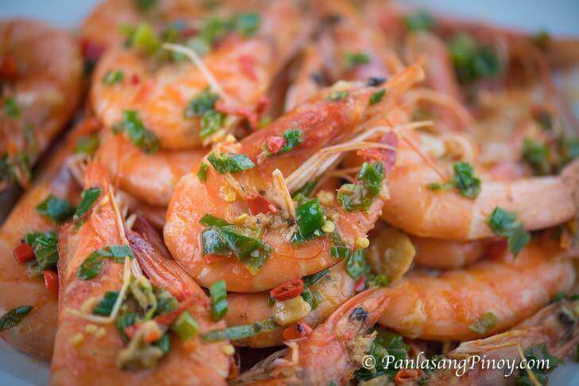

Chili Garlic Buttered Shrimp

Ingredients
- 2 lbs. medium to large shrimp cleaned
- 5 pieces red Thai chili pepper minced
- ½ cup chopped scallions
- 8 cloves garlic crushed and chopped
- 2 tablespoons cooking oil
- 3 tablespoons butter
- ½ teaspoon salt
- ¼ teaspoon ground black pepper
Directions
-
Place the shrimp in a plate. Rub salt and ground black pepper all over.
Let it stay for 10 minutes.
-
Melt butter in a pan. Add the cooking oil. Once the mixture gets hot,
add the garlic and then cook in medium heat until light brown.
-
Put the chili into the pan. Stir and continue to cook for 30 seconds.
- Add the shrimp. Stir-fry until it turns medium orange.
-
Stir-in the chopped scallions and continue to stir-fry for 1 minute.
- Transfer to a serving plate.
- Serve. Share and enjoy!
- Serve. Share and enjoy!
Return to Main Page